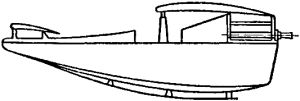
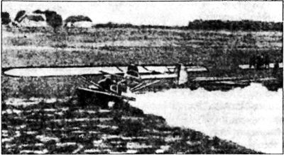

Опыты с «ракетными» самолетами
«Немецкое ракетное общество» создавалось не только для того, чтобы его члены могли обмениваться идеями и коллективно решать различные проблемы общей теории и программы межпланетных путешествий. Одной из главных задач, которая стояла перед Обществом в целом, была задача подготовки натурных испытаний ракет и ракетопланов, а также поиск спонсоров, которые могли бы выделить на это необходимые суммы.
Не следует забывать, что и Германия, и Австрия в те годы переживали не лучшие времена, и проблема финансирования стояла очень остро. Поэтому случаи сотрудничества энтузиастов ракетостроения с богатыми фирмами были единичны и заслуживают отдельного внимания.
Максу Валье удалось заинтересовать ракетами автомобильного магната Фрица фон Опеля, который увидел в этой теме возможность создания эффектной рекламы при минимальных затратах. В результате появилась идея создания «ракетного автомобиля». Своей цели фон Опель достиг, однако сами эксперименты с автомобилями, снабженными батареями пороховых ракет, имели малую научную и практическую ценность.
Тогда Валье зашел с другой стороны и в развитие своей концепции об эволюции ракетного аэроплана предложил фон Опелю провести серию опытов с ускорителями для самолетов.
Такие опыты действительно состоялись 10 и 11 июня 1928 года на горе Вассеркуппе в Западной Германии. Самолет, предоставленный для эксперимента исследовательским институтом общества «Рен-Росситен Гезельшафт», был обычным планером типа «утка». Ракетные двигатели для эксперимента сконструировали на пиротехнической фабрике «Синус», принадлежащей инженеру Фридриху Зандеру, который также состоял членом «Немецкого ракетного общества». А финансировал все это дело сам фон Опель.
Для испытаний Зандер разработал пять типов ракет, три — для моделей планеров и два — для полноразмерного планера. Пилотом ракетного планера был назначен Фридрих Штаммер.


Естественно, что первые испытания были проведены на моделях. Это были так называемые «бесхвостки» с размахом крыла немногим более 210 сантиметров и весом около 13 килограммов. На одной из них установили мощную ракету с тягой 75 килограммов. Как и следовало ожидать, для столь мощной ракеты крылья и элероны модели оказались просто помехой — ракета мгновенно подняла модель вертикально вверх, а когда кончилось топливо, модель упала на землю.
Предварительные опыты позволили сделать определенные выводы относительно возможности установки ракет на планер. Экспериментаторы отказались от ракет с тягой 360 килограммов, а остановились на двух типах ракет с тягой соответственно 12 и 15 килограммов. Поскольку пилот мог допустить ошибку, воспламенение ракет осуществлялось электрическим запалом, рассчитанным на последовательное включение ракет. Для запуска планера с земли использовался обычный резиновый трос. Пилот не должен был включать ракеты, пока планер не поднимался в воздух и не освобождался от троса.
Несмотря на все эти приготовления, первые две попытки поднять в воздух планер закончились неудачей: что-то случилось с резиновым тросом, а Штаммер включил один из двигателей еще до того, как планер оказался в воздухе. Топливо выгорело, но скорость планера не увеличилась. Во второй раз Штаммеру удалось подняться в воздух, но при выравнивании планера он обнаружил какую-то неисправность и сделал посадку, пролетев около 200 метров без второго двигателя. Планер был возвращен на стартовую площадку, и второй двигатель был снят. После осмотра системы зажигания на планер установили два ракетных двигателя на твердом топливе с тягой по 20 килограммов. Расстояние, которое планер пролетел на этот раз, составило около 1,5 километра, а весь полет длился немногим более одной минуты. Пилот впоследствии отмечал, что «полет был приятен ввиду отсутствия вибраций от вращающегося винта».
При следующем испытании предполагалось перелететь через небольшую гору. Запуск прошел хорошо, и, когда планер поднялся в воздух, была включена первая ракета. Через 2 секунды она с грохотом взорвалась. Горящие куски пороха мгновенно подожгли планер, однако пилот сумел резким маневром сбить огонь и посадить аппарат. Сразу после посадки загорелась, но, к счастью, не взорвалась вторая ракета. Планер был почти уничтожен, и потому общество «Рен-Росситен Гезельшафт» отказалось от продолжения экспериментов.
После этого разработкой планера с ракетным двигателем занялась фирма «Рааб-Катценштейн» в Касселе. Она построила бесхвостый самолет, рассчитанный на одного пилота. По неизвестным причинам первые полеты закончились неудачно, и фирма также отказалась от опытов.
Не сдался один только фон Опель. Его новый ракетный планер был готов к летным испытаниям 30 сентября 1929 года. Для запуска применялась деревянная направляющая длиной около 21 метра. Здесь не было ни резинового троса, ни какого-либо другого стартового устройства — взлет осуществлялся только с помощью ракет. Первые два испытания, проведенные ранним утром 30 сентября, не были успешными. Ракетные двигатели не развили достаточной тяги, чтобы оторвать планер от земли; он сделал всего лишь несколько коротких прыжков. После завтрака фон Опель предпринял еще одну попытку, на этот раз удачную. Планер поднялся в воздух и совершил полет продолжительностью около 10 минут. При этом максимальная скорость планера составила 160 км/час Однако во время посадки загорелись крылья, в результате чего ракетоплан фон Опеля сильно пострадал и оказался совершенно непригодным для дальнейшего использования.